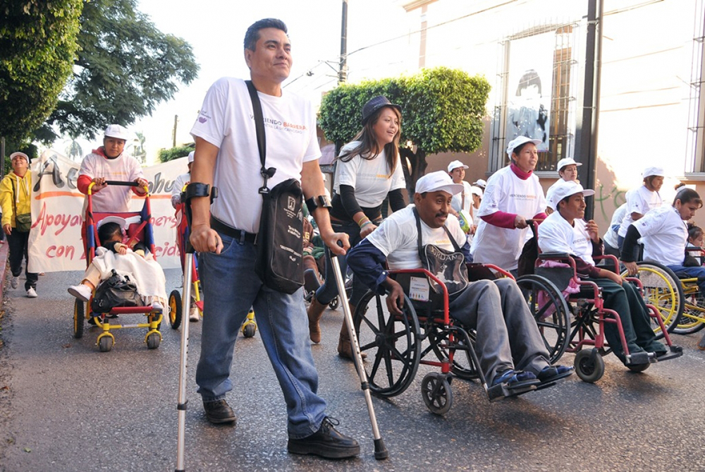

Paradigmas de la discapacidad
Cuando hablamos de paradigmas de la discapacidad, tenemos que analizar por que este tema es uno de los que menos tienen avance o análisis científico a nivel mundial ya que es un campo de conocimiento en construcción, porque si bien en la historia se empezó a retomar la discapacidad, el paradigma médico o de rehabilitación y por otro lado el paradigma desde los derechos humanos a partir de la primera mitad del siglo XX específicamente en 1940 y 1950, permitían de cierta forma la “integración” del individuo con discapacitad en países de primer mundo, esto significa que a través de la historia de el estudio de las personas con discapacidad, todos los países tercermundistas muy probablemente estos avances llegaron muchos años después, sin mencionar factores importantes como recursos económicos, estructuras adecuadas, incluso hasta hoy en día uno de los factores mas grandes es la cultura y religión, si bien se han dado pasos a comparación de algunas décadas atrás, la religión muchas veces sigue manteniendo la postura que al recibir un bebé con alguna condición o discapacidad es un “castigo divino”, si bien cabe mencionar que en la historia La iglesia cristiana condena el infanticidio, pero se alienta atribuirles a las personas con discapacidad el origen de cualquier suceso sobrenatural y se les denominan endemoniados o endemoniadas. Eran personas “poseídas por el demonio” y otros espíritus infernales los cuales eran sometidos a prácticas exorcistas siendo todo caso Víctimas de la exclusión social y violencia extrema.
¿Pero como se atribuyo el concepto de “rehabilitación cuando hablamos de discapacidad?
Al terminar la Segunda Guerra Mundial, algunos países designaron a sus mejores médicos y científicos a la curación y reintegración de soldados lesionados y desarrollaron la disciplina formal de la rehabilitación. Este modelo paradigmático fue denominado el modelo médico o rehabilitatorio el cual considera la discapacidad como un problema personal directamente causado por una enfermedad, trauma o Estado de salud, qué se requiere de cuidados médicos prestados en forma de tratamiento individual por profesionales (ODHAG, 2005:26).
Fue hasta este entonces donde se crearon instituciones destinadas a la rehabilitación de personas con discapacidad en países desarrollados, y hasta entonces surgieron las primeras escuelas especiales para personas con algún grado de discapacidad.
Hasta que a finales de la década de 1960 e inicios de 1970 se da el segundo modelo de atención a las personas con discapacidad. Con este paradigma de atención a la discapacidad se observó en la mayoría de las sociedades un importante proceso de transformación conceptual práctica, en torno a la manera en que son concebidas las personas con discapacidad. Dicho proceso ha significado transitar el modelo de rehabilitatorio, qué representaba el modelo médico, al paradigma de los derechos humanos y sociales. El concepto pasada de la segregación-integración al principio de la inclusión.
Este modelo social de atención a la discapacidad considera el fenómeno principalmente como un problema creado socialmente y, sobre todo como una cuestión de integración - inclusión de las personas en la sociedad, dónde la discapacidad no es un atributo de la persona, sino un conjunto de condiciones, muchas de las cuales son creadas por el ambiente social.
“El modelo de los derechos humanos se basa en la inclusión y en transformar las instituciones separadas. Enfatizar así el derecho de los individuos a integrarse a social y económicamente” (Masiah, 2004:36)
En la actualidad, la discapacidad regularmente es producida debido a que en el medio social no existen las facilidades que le permiten a las personas estar en igualdad de condiciones para acceder a las mismas oportunidades que tienen los demás miembros de la sociedad, imponiéndoles barreras que no les posibilitan desarrollarse Y potencializarse como ciudadanos normales un claro ejemplo es que los niños con discapacidad también carecen de acceso a la educación en especial en áreas rurales; muchos de ellos solo pueden asistir a escuelas especiales segregadas y solo unos pocos completan la secundaria o entran en instituciones de educación superior esto conlleva que en la adultez la mayoría de personas con discapacidad quedan en efecto, excluidas de participar en el desarrollo de su país
